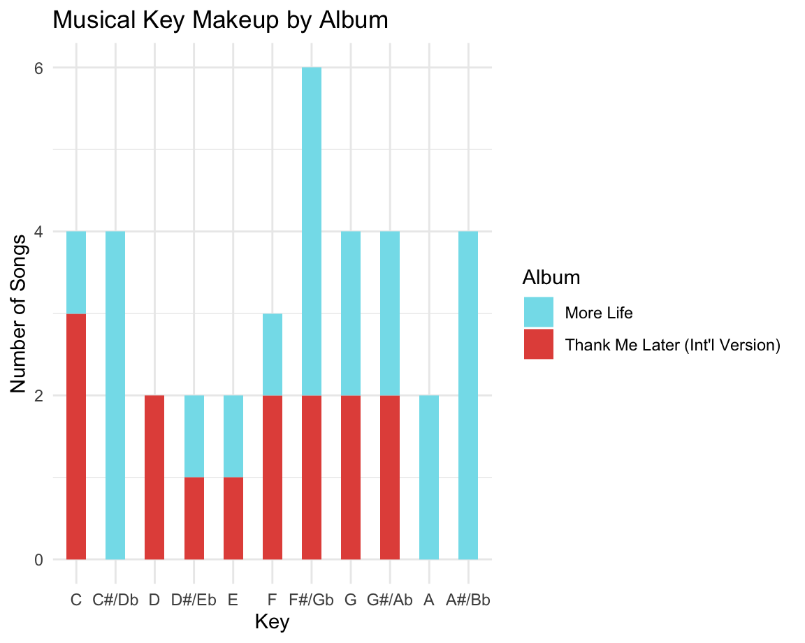

Introduction
Backstory
If Youre Reading This, Its Not Too Late
Welcome to my storyboard that will discuss some interesting highlights regarding Drakes albums and songs featured in them. Drake has reinvented himself many times. How has his style changed over time? I shall look at the audio features for each major album, and cluster them into distinct style periods. My chosen corpus consists of music by the Canadian rapper Drake. Drake has been one of my favourite artists for several years. He has has also consistently been my number one listened to artist, according to Spotify. The interesting thing about Drake is that he always bring out albums that are true to himself, but also releases music that is out of his comfort zone. Therefore, the comparison points in my corpus will be a select number of his albums and mixtapes. Drake is well-known for expressing his emotions in his music and I expect the results to project this as well. This means that some albums will concern the concept of love and heartbreak, while others would focus more on a bachelor lifestyle. In addition, I think that Drake makes bolder moves over the years regarding his rapping style and music genres he indulges himself in. I expect a lot of variance in the danceability, energy, speechiness and valence across the albums. Drake is also known for making a lot of hits. It will be interesting to find his most popular songs and see why they gained popularity and how they differ from one another. What are the requirements for Drake to make a hit?
Album names
Albums
Care Package
Certified Lover Boy
Dark Lane Demo Tapes
Her Loss
Honestly, Nevermind
If Youre Reading This Its Too Late
More Life
Nothing Was The Same (Deluxe)
Scorpion
So Far Gone
Take Care (Deluxe)
Thank Me Later (Intl Version)
Views
What A Time To Be Alive
Albums
Energy

The energy distribution over Drakes albums is shown in this plot. It is visible that his albums do not have a set energy distribution, it is quite varied. The albums Her Loss and What A Time To Be Alive seem to follow a balanced distribution, whereas Thank Me Later (Intl Version) has more of a build up of energies.
More Dance or More Energy?
This plot shows the computed average danceability and the average energy. The general trend of this plot is that albums with a higher average energy tend to have a lower average danceability. The lower energy songs tend to have a higher daneceability. It is interesting to see that a single outlier for this would be the Take Care album. This album in particular contains the lowest average energy and the lowest average danceability. The album Thank Me Later has the highest average energy and has the lowest average danceability. More Life on the other hand has the lowest average energy and one of the highest average danceability. The majority of Drakes albums seem to have an average danceability between 0.6 and 0.75, with their computed average energy ranging from 0.5 to 0.6.
More Life vs Thank Me Later

The previous plot showed us that Thank Me Later is the album with the highest energy and lowest danceability, whereas the album with the lowest energy and a high danceability is More Life. This plot shows the distribution of keys between these two extreme albums. It is visible that More Life makes use of all the keys found in a pitch class. Thank Me Later on the other hand mainly uses the keys in the range of 6 to 9. What is noticable is that most of the More Life songs are in keys 1, 7 and 11. Keys 1 and 11 specifically are not to me found in Take Me Later.
What A Time To Be Alive
The album What A Time To Be Alive showed to have the highest danceability, therefore it would seem fit to see the danceability distribution over the songs found in the album. The all of the songs have a danceability over 0.7, with the exception of Diamonds Dancing. This song ranks the lowest on the danceability bar with a value of 0.5, which is ironic given the song title.
Scorpion vs If Youre Reading This Its Too Late
The following visualisation shows us the difference in standard deviations of tempo and means of tempo. The comparison is between the albums Scorpion and If Youre Reading This, Its Too Late (IYRTITL). These albums were chosen, because they both vary quite a bit in tempo. This also reflects in the visualisation. For both albums we see songs majorly having low standard deviations. Scorpion seems to have more songs with a higher mean tempo, yet the difference in the amount of songs with a lower mean tempo is not drastic. Scoropion seems to generally have 4 minute long songs. There are 4 songs that are about 3 minutes long. Two of these have a low mean tempo, one has a mean tempo around 130 bpm and the last one has a high mean tempo at 175 bpm. Other than that, the songs are spread out over the mean tempo, as expected. IYRTITL seemingly has more long songs than Scorpion does. The shorter songs also seem to be a bit more spread out with regards to standard deviation. There is one particular outlier that has a very high standard deviation and high mean tempo. This outlier also happens to score the lowest on loudness. A similarity between these two albums would be that the longer songs tend to have a higher standard devation in tempo. Also, for both albums the full range of mean tempo is used. There isnt a set tempo for each album, which results in a lot of variety across the albums.
Take Care vs Care Package
Care Package and Take Care are two of Drakes older albums. Despite Care Package being released in recent years, it contains older songs by Drake from around the same time as Take Care. These songs range from 2010 and 2016. Take Care was released in 2011. Both albums have similar old school Drake vibes, which you dont find in his more recent albums. These violin plots shows that timbre coefficient 5 seems to be able to distinghuish the difference between the albums the best.
Tempo
The histogram shown here gives us the average tempoes of each of Drakes albums and their counts. The lowest tempo seems to be 111 bpm, which the bar plot shows to be the album Nothing Was The Same. This makes sense, as this is one of Drakes most successful hip hop album. Hip hop music tends to be in the range of 80-100 bpm. The genre that comes after this is house, which starts from 115 bpm. Drake using a bpm outside the typical range for a hip hop album, could have played a major part in the success of his album. Next, there are two outliers from the mean tempoes. Both albums have a high average bpm of around 140 bpm. These albums are Take Care and What A Time To Be Alive. A bpm of 140 corresponds to the rap genre, which ranges between 85-140 bpm. The latter album was a collaboration Drake did with the rapper Future. The average bpm here was 139. It would make sense for two rap artist to have an album together that would mainly consist of high bpm rap music. Take Care closely follows with a bpm of 138. It seems that the most common bpms are 114, 120 and 123, but the albums generally range closely between 111-123 bpm.
Songs
Madiba Riddim

A chromagram represents the time against the pitch classes. It shows the measurement of the energy per pitch class. This chromagram shows the analysis of Drakes Madiba Riddim. This song is one of Drakes more instrumental songs, as the beat mainly consists of a guitar. The normalisation vector used here was chebyshev. The choice for this is simple: because Spotify also does so. In my opinion it is better to keep the method of analysis as close to Spotifys handling as possible. What is clear from this visualisation is that the C#/Db note is strongly found throughout the majority of the song. C and F#/Gb also show significant presence in the song. The G note shows slight presence in a few sections of the song. Three parts particularly: around 0-50s, 75-100s and 130-150s. The A#/Bb note together with the B note are hardly detected. The rest of the notes are lightly spread through the song.
Best I Ever Had
The straighter the diagonal line in the dynamic time warp, the more the pitches are similar. For songs that show no similarity, there is no diagonal line visible. Here similarity is shown from two same titled songs, from different albums. Each album contains the same song name: Best I Ever Had. The line found in the plot is straight, meaning that the songs are the same. Drake unfortunately does not have any live performances recorded on Spotify. It would have been nice to see the difference between his studio recording and live performance.
Glow
Not all songs in the corpus use the same consistent melody or beat. Some songs contain completely different parts, whether that be a distinct introduction or outro of a song. One of these songs is Glow. In this song there is a big beat switch in the section from around 150s. The components c04 and c06-c12 in the cepstrogram capture this beat switch well, as there is a change in magnitude from this point. Component c04 specifically has had a consistent magnitude of 1.0 throughout the song, up until the switch.
Diamonds Dancing
Diamonds Dancing was the outlier of the album What A Time To Be Alive, in terms of danceability.
Get It Together
The following plot is a chordogram, which shows us the chords found in a song. Drakes Get It Together is a melodious song, for which chords can easily be found within. The chordogram shows presence a strong presence of C# minor from 80s-200s. Within this period there is an F minor from 100s-180s. C# minor relatively behaves the same as C minor, but slightly weaker than C minor. The last part from 230s shows a repeat of F minor.
Summers Over Interlude
Flights Booked

Flights Booked generally has a tempo slightly higher than 120 BPM. When listening to the song, you should notice that at around 65s there is a small drop in tempo. This is also reflected in the tempogram, as you can see the downward shift of tempo. The same thing happens again at around 125s, which is also visible in the tempogram. The section from 140s-150s you can hear that Drake changes some tones, which could be the cause of the tempogram to fluctuate like that.